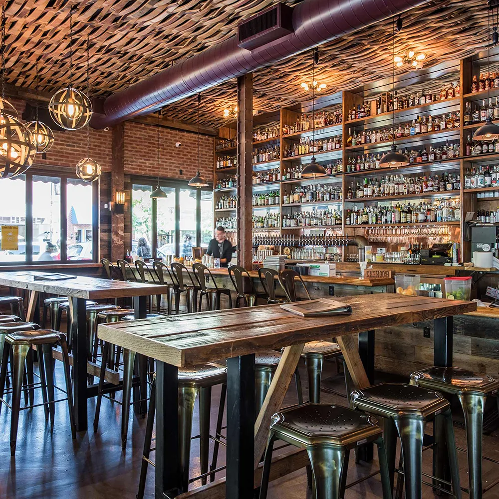
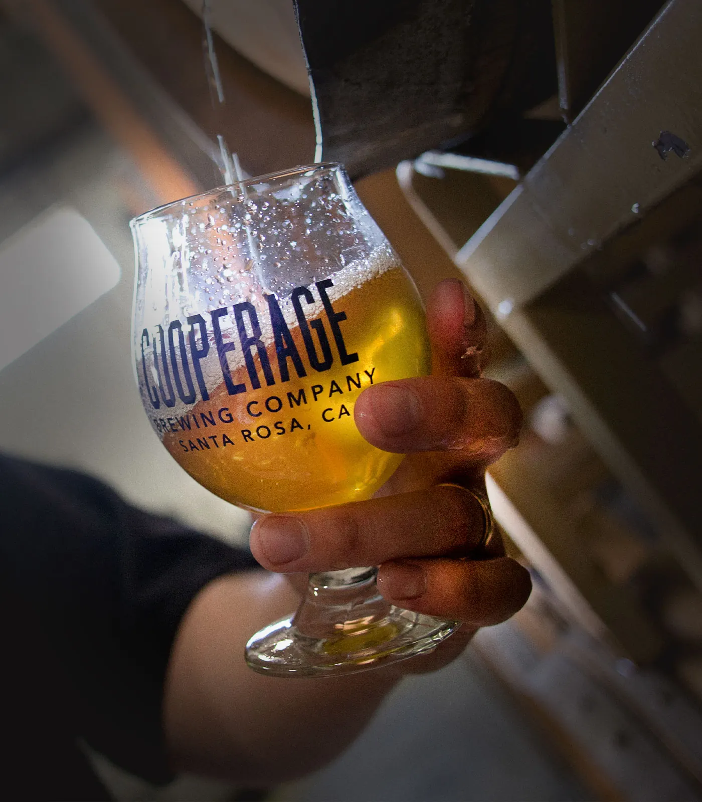

Santa Rosa calls February FeBREWary. The month-long celebration of the city's brewing scene is built around a free Beer Passport that sends you from one brewery and beer bar to the next, and it leads straight into the most famous release on the local calendar: Pliny the Younger at Russian River Brewing. If you are planning a late-winter trip, here is how the passport works, which places took part last year, and the 2027 Pliny dates Russian River has posted.

What is FeBREWary?
FeBREWary is Visit Santa Rosa's celebration of the city's brewing heritage, run with the local breweries. It started about a decade ago, and 2026 was its 10th anniversary. The North Bay Bohemian reported that the celebration launches on February 1 but runs year-round, resetting each year, so the passport is not limited to February.
The city has the beer credentials to back it up. Visit Santa Rosa notes that Santa Rosa was a 2024 USA Today Readers' Choice winner for Best Beer City, placing 10th in the country and first in California.
How the Santa Rosa Beer Passport works
As of late November 2026, the 2027 passport details have not been posted. Here is how it worked in 2026, which gives you a good idea of what to expect:
- It is free and digital. You sign up online and save the passport to your phone's home screen. In 2026 it moved to an app-style passport with location-based check-ins.
- You check in at each stop. Sample something at a participating brewery or bar, then check in to collect points and unlock rewards.
- Finishing earns a medal. Completing every stop in 2026 earned a limited-edition 10th anniversary medal that doubles as a bottle opener.
- It is self-guided and 21+. Go at your own pace, and plan your rides: several stops are outside downtown.
Watch Visit Santa Rosa's FeBREWary page in January for the 2027 sign-up link, stops and prize.
Which breweries took part in 2026
The Bohemian's 2026 list named these participants:
- Russian River Brewing Company (Santa Rosa and Windsor)
- Moonlight Brewing Company
- HenHouse Brewing Company
- Lagunitas Brewing Company
- Cooperage Brewing Company
- Shady Oak Barrel House
- OLD CAZ BEER
- CUVER Belgian Brewers
- Beer Baron Bar & Kitchen
- Wilibees Wine & Spirits
The 2027 lineup may change, so treat this as a starting point. Our Wine & Beer guide has addresses and hours for the Santa Rosa breweries.

Beer week in February
February is also beer week season around the Bay Area. SF Beer Week has run in February in recent years, with events at breweries and bars around the region. Its 2027 dates had not been posted when we checked, so keep an eye on sfbeerweek.org if you want to line your trip up with it.
Later in spring, the Battle of the Brews at the Sonoma County Fairgrounds is run by the Active 20-30 Club of Santa Rosa. Its site shows April 10, 2027 in the headline but still carries 2026 details below, so confirm the date before you plan around it.
Pliny the Younger 2027: March 19 to April 1
Pliny the Younger is Russian River Brewing's triple IPA, first brewed in 2005 and released once a year. Russian River's own page lists the 2027 release as in person at both pubs, on tap and in bottles, March 19 to April 1, 2027. The brewery moved the in-person release from February to March and April in 2022 and has said the change is permanent, which is why Pliny now follows FeBREWary rather than falling inside it.
The two pubs are the downtown Santa Rosa brewpub at 725 4th Street and the Windsor brewery and pub at 700 Mitchell Lane. Russian River says bottles are sold only at the brewpubs during the release, not online or in its gift shops.
Expect lines. In 2025 the brewery warned of waits of six hours or more on busy days, with lines starting around 5 or 6 am, one wristband per guest, limits on pours and bottles, and a time limit at the table. The 2027 rules have not been posted yet, so check Russian River's release page before you go.
Good to know
- FeBREWary starts February 1; the passport has run year-round.
- The Beer Passport was free and digital in 2026, for ages 21 and over.
- 2027 passport stops and prizes have not been announced yet.
- Pliny the Younger 2027: March 19 to April 1, on tap and in bottles at both Russian River pubs.
- Pliny bottles are sold only at the brewpubs during the release.
Plan a beer weekend from downtown
Russian River's downtown brewpub is on 4th Street, a few blocks from Old Courthouse Square, which makes downtown the easiest base for a passport weekend or a Pliny morning. Hotel E is in a historic building on Old Courthouse Square, with continental breakfast before an early start, an evening happy hour and valet parking, so the car can stay put. Art House Santa Rosa is a few blocks away on 7th Street.
Plan your stay downtown
Browse hotels, restaurants, wineries and attractions, all in one place.
Open the directory